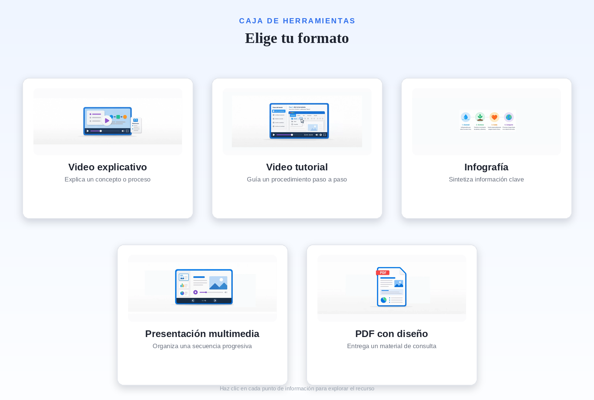

Explora el tablero interactivo y revisa cada punto clave para reconocer los tipos de recursos informativos que puedes integrar en una actividad o lección. Mientras avanzas, identifica qué recurso se ajusta mejor al propósito pedagógico de un momento de tu secuencia instruccional: explicar, guiar un procedimiento, sintetizar información, organizar una presentación o entregar un material descargable.
